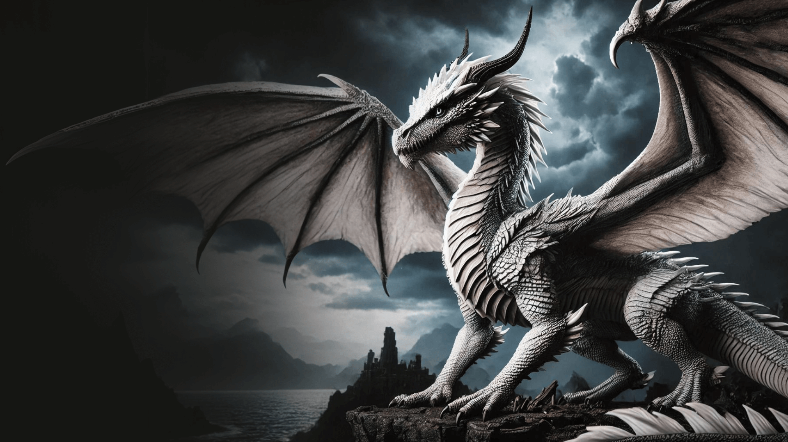
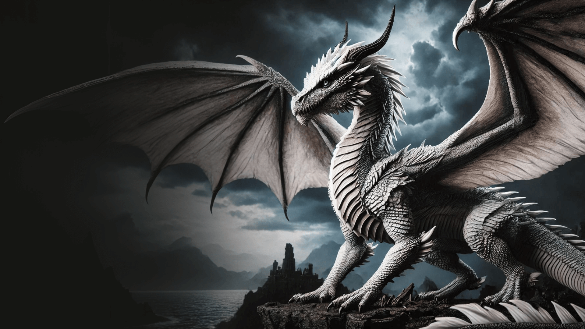

Balerion
Balerion, called the Black Dread, was a dragon of House Targaryen. He was ridden by King Aegon I Targaryen during the Conquest. Other known riders of Balerion were King Maegor I Targaryen, Princess Aerea Targaryen and Prince Viserys Targaryen.
Syrax
Syrax was a she-dragon. She was ridden solely by Rhaenyra Targaryen. Her name came from a goddess of Valyria. She was huge and formidable, but not as fearsome or experienced in battle as Caraxes. She was kept in chains and exceedingly well fed.
Arrax
Arrax was a dragon ridden by Prince Lucerys Velaryon during the Dance of the Dragons. He was mature enough to be ridden and still young and growing. He was five times smaller than Vhagar.
Caraxes
Caraxes was a dragon, nicknamed the Blood Wyrm, he was ridden by Prince Aemon Targaryen and after by Prince Daemon Targaryen. During the Dance of the Dragons he was huge, formidable, fearsome, and experienced in battle.
Seasmoke
Seasmoke was a pale silver-grey dragon of Dragonstone, he was the pride and passion of Laenor Velaryon. Jacaerys Velaryon called for dragonriders during the Dance of the Dragons. Seasmoke killed one of his kingsguard, Steffon Darklyn, during an attempt. Later, Addam Velaryon rode it.
Vermax
Vermax was a male dragon. He was ridden by Prince Jacaerys Velaryon. He was thriving and growing larger every year. Vermax became ill-tempered when in proximity of snow, ice, and cold.
Vhagar
Vhagar was one of the dragons used by Aegon The Conqueror and his sisters during The War of Conquest. It was named for one of the gods of old Valyria. Vhagar was ridden by Visenya Targaryen, Laena Velaryon and Aemond Targaryen.